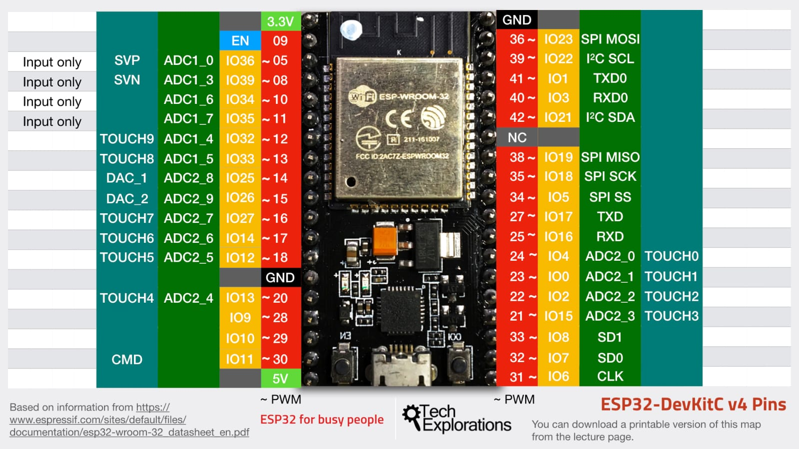
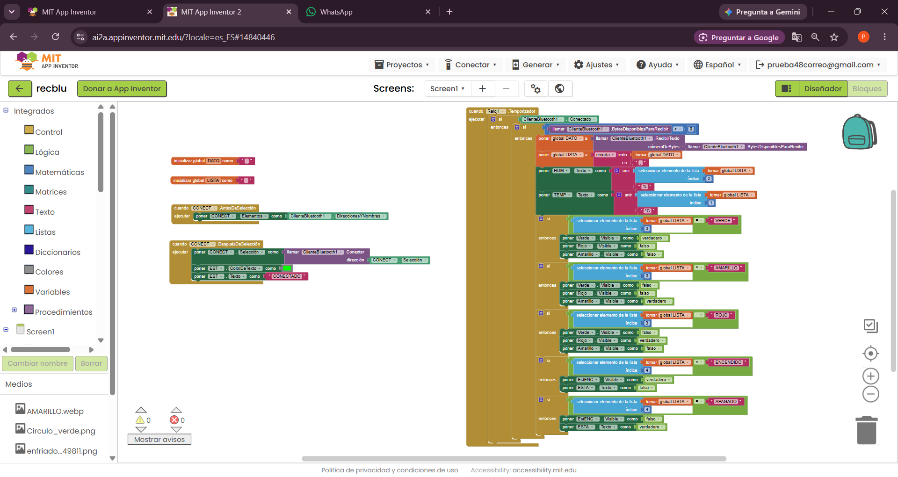
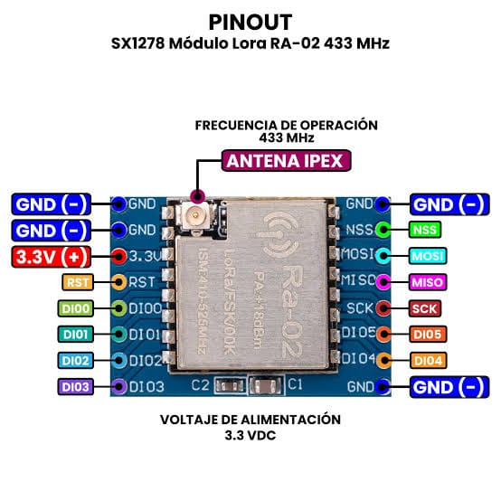
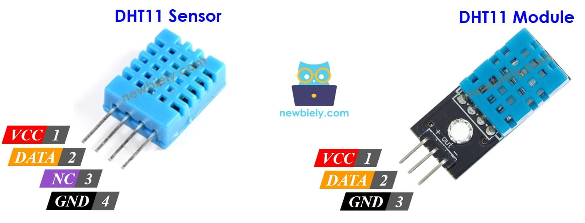

⌁
Aprendizaje técnico
Conceptos explicados con ejemplos, esquemas, tablas de pines y documentación verificable.
Un espacio de aprendizaje técnico para comprender cómo se capturan, procesan y transmiten datos mediante sensores, microcontroladores y aplicaciones. Material propio, documentación, imágenes y prácticas paso a paso.
La telemetría consiste en medir variables a distancia y enviar los datos a otro equipo para registrarlos o visualizarlos. En autotrónica se puede aplicar al monitoreo de temperatura, tensión, estados de sensores y variables del vehículo, siempre usando interfaces eléctricas adecuadas.
Conceptos explicados con ejemplos, esquemas, tablas de pines y documentación verificable.
Conexiones, código, pruebas y criterios para distinguir una medición correcta de un error.
Datasheets, manuales de fabricantes, documentación oficial y enlaces externos seleccionados.
El hardware es la parte física: microcontrolador, sensores, módulos de comunicación, alimentación, conectores y cableado.

Imagen de referencia suministrada: pinout de una ESP32 DevKitC. El pinout exacto depende de la placa y de la variante del módulo.
El ESP32 es una familia de microcontroladores con conectividad inalámbrica. En una placa de desarrollo, ejecuta el programa, lee entradas, procesa datos y controla salidas. El módulo ESP-WROOM-32 clásico integra Wi‑Fi y Bluetooth y dispone de interfaces como GPIO, ADC, SPI, I²C y UART; las capacidades concretas dependen de la variante.
| Interfaz | Uso típico |
|---|---|
| GPIO | Entradas y salidas digitales para señales compatibles. |
| ADC | Lectura de ciertas señales analógicas dentro de los límites eléctricos. |
| SPI | Comunicación rápida con periféricos como el módulo LoRa. |
| I²C | Bus de dos líneas usado por sensores y expansores compatibles. |
| UART | Comunicación serie, por ejemplo con un equipo o módulo externo. |
El software define qué hace el circuito, cómo interpreta los datos y cómo los presenta al usuario.
El firmware es el programa que se ejecuta dentro del ESP32. Puede inicializar sensores, leer entradas, filtrar valores, controlar eventos y enviar datos. Arduino IDE facilita comenzar; ESP-IDF ofrece el entorno oficial de desarrollo de Espressif.
Plataforma visual para diseñar pantallas y programar con bloques. La interfaz puede mostrar temperatura, humedad, estados y avisos. Los componentes de conectividad disponibles dependen del método elegido y del sistema operativo del teléfono.
Definir un formato consistente —por ejemplo, TEMP=24.5;HUM=60— facilita separar los campos, validar datos y mostrar cada variable en su etiqueta correspondiente.
Agregar unidades, fecha/hora, estado de conexión y tratamiento de errores mejora la lectura.

Captura aportada del proyecto en MIT App Inventor.
En la captura se observa una lógica basada en un temporizador que comprueba la conexión Bluetooth, consulta si hay bytes disponibles, recibe texto, lo separa en una lista y actualiza campos de pantalla. También compara estados recibidos para mostrar indicadores de colores.
La captura permite describir la lógica general; para verificar los bloques exactos y corregir errores se necesitaría el archivo del proyecto de App Inventor (.aia).
Las fichas siguientes parten de las fotografías aportadas y se pueden ampliar con datasheets, fotos propias y pruebas de laboratorio.

Módulo de radio para comunicación de largo alcance y bajo consumo. La variante mostrada trabaja habitualmente en la banda de 433 MHz y se comunica con el microcontrolador mediante SPI.
La ficha 7SEMI suministrada indica rango 410–525 MHz, SPI y alimentación típica de 3,3 V. Alcance real depende de antenas, obstáculos, potencia, configuración y normativa local.

Sensor digital básico para medir temperatura y humedad relativa ambiental. No mide directamente temperatura de motor ni fluidos automotrices y no está diseñado para ambientes severos del vehículo.
El módulo de tres pines puede incluir componentes adicionales y tener serigrafía distinta. Confirmar siempre el modelo y su documentación.
Sensor → ESP32 → enlace de comunicación → receptor/app → usuario.
El sensor produce una medición; el firmware la valida y codifica; el enlace la transporta; la aplicación la decodifica y la presenta con unidades y estado.
Para telemetría vehicular real, añadir protección contra transitorios, filtrado, conversión de niveles y diseño de alimentación apropiado.
Ejercicios iniciales para comprender el recorrido completo de los datos, desde la señal física hasta la pantalla del teléfono.
Buscá recursos por palabra clave. Los archivos incluidos son los que se aportaron para este sitio.
Características, pinout, periféricos y condiciones eléctricas.
Abrir documentación ↗Entorno de desarrollo de Espressif para firmware.
Abrir guía ↗Diseño de aplicaciones móviles con bloques.
Abrir sitio ↗Referencia del transceptor LoRa y sus interfaces.
Producto oficial ↗Pinouts, sensor DHT11, placa ESP32 y bloques de App Inventor incluidos en la carpeta assets.
Los enlaces externos llevan a sitios de terceros. Verificá versión, modelo de placa y región de radio antes de usar especificaciones en un montaje.
ESP32 es el microcontrolador/módulo físico (hardware). El firmware es el software que se programa para que lea sensores, procese valores y se comunique con otros equipos.
No. Son tecnologías de comunicación distintas. LoRa suele priorizar enlaces de largo alcance y baja tasa de datos; Wi‑Fi prioriza redes de mayor caudal y Bluetooth se usa habitualmente en enlaces cercanos. El alcance depende de la instalación y del entorno.
No es apropiado para medir directamente la temperatura de un motor o refrigerante. Para una aplicación automotriz se requiere un sensor con rango, encapsulado y acondicionamiento adecuados.
No: esta versión es un sitio estático. Para añadir contenido, se incorporan los archivos a la carpeta del sitio y se actualiza el HTML. Después se vuelve a publicar el sitio.